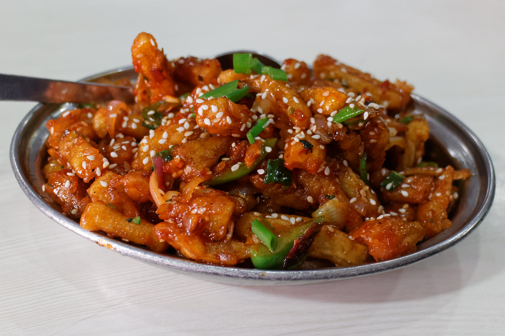

Honey Chilli Potato

Description
Honey Chilli Potato is a great and popular Chinese dish that is usually served as an appetizer or with a main dish. It has a savory, spicy flavour but a hint of sweetness.
It mainly has crispy potato fingers that are made with various sauces and then topped off with honey.
Home
Ingredients
- For potatoes:
- 2-4 medium sized potatoes
- Cornstarch for coating and normal+cornflour
- Salt, red chilli powder+paste for seasoning
- Oil for frying
- For the sauce:
- Oil for sauteing
- Finely chopped or minced garlic
- Sliced capsicum
- Soy sauce
- Chilli sauce
- Tomato ketchup
- Honey
- Sesame seeds for garnishing
Steps
- Mix together all ingredients for the dry batter: chilli powder + paste, garlic paste, all purpose flour, cornflour and salt.
- Add potatoes and coat in dry batter.
- Deep fry the potatoes in batches and drop them one at a time so they dont stick!
- Deep fry on a medium high flame until theyre golden brown.
- Remove and set aside.
- Make a thick batter by mixing all purpose + corn flour, pepper and water.
- Dip each half fried potato stick in it.
- Fry the coated potatoes, on high heat, one at a time.
- Fry till golden brown, remove on tissue paper and set aside.
- For the sauce, heat oil in a large wok and add garlic. Saute for 30 seconds, don't let it brown.
- Add sesame seeds and saute for another 30 seconds, again being careful not to brown.
- Add ketchup, honey, chilli paste, chilli flakes, soy sauce and water, and vinegar according to taste.
- Add the potatoes set aside earlier, and toss well until they're coated.
- Add cornflour slurry, and toss again for two minutes till the cornflour cooks through.
- You have yourself a great appetizer!